"A shockwave is a surface of discontinuity
propagating in a gas at which density
and velocity experience abrupt changes."
Zemplén, 1905
Natura non facit saltus.
(Nature does not make jumps.)
~Lucretius, Newton, Leibniz, Darwin, ..., etc.
In the 1700s, the first wave equation was studied by d'Alembert, Euler, Lagrange and Monge. $$\frac{\partial^2 u}{\partial t^2} = c^2 \frac{\partial^2 u}{\partial x^2} $$ This has solution $$ u(x,t) = f(x-ct)+g(x+ct) $$
A century later, compressible flows were studied by Hugoniot, Poisson, Rankine, Rayleigh, and Stokes.
The compressible flows they studied were similar to the Euler equations, shown here as $$ \mathbf{u}_t + \mathbf{f}(\mathbf{u})_x = 0 $$ or, expanded as $$ \frac{\partial}{\partial{}t} \left[ \begin{array}{ccc} \rho{} \\ \rho u \\ E \end{array} \right] + \frac{\partial}{\partial x}\left[ \begin{array}{ccc} \rho{} u \\ \rho{}u^2 +p \\ \rho u H \end{array} \right] = \mathbf{0}, $$ with $$H = \frac{E+p}{\rho}$$ and closure from the ideal gas law, $$p = (\gamma-1)\left(E-\frac{1}{2}\rho u^2\right)$$
A Discontinuous Solution
The Jump Conditions $$\Delta \mathbf{f} = S \Delta \mathbf{u}$$
Given the left preshock state $\mathbf{u}_L$ and the postshock density, $\rho_R$, the right pressure and velocity can be computed from
\begin{eqnarray*}
\frac{p_R}{p_L}&=&\frac{(\gamma+1)\rho_R-(\gamma-1)\rho_L}{(\gamma+1)\rho_L-(\gamma-1)\rho_R}\\
u_R-u_L&=&(p_L-p_R)\sqrt{\frac{2}{\rho_L\left((\gamma-1)p_L+(\gamma+1)p_R\right)}}
\end{eqnarray*}
Taking $\rho_R > \rho_L$ results in the physical Hugoniot curve, and $\rho_R < \rho_L$ results in the nonphysical Hugoniot curve.
A Discontinuous Solution
Even with this solution, the picture is not complete.
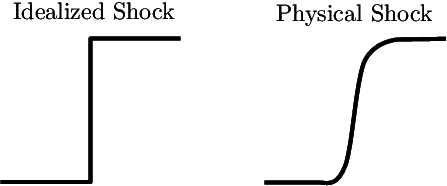
In reality, a shock has a finite width, coming from the physical viscosity not present in the governing equations.
Numerical Shockwaves
(Emmons, 1940s)

Emmons assumed the idealized shock,
underestimating the width.
This was the start of shock-fitting.
Numerical Shockwaves
(Von Neumann, Richtmyer, 1949)
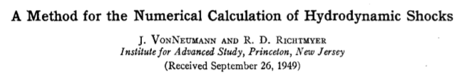Artificial viscosity was introduced to give shocks an internal structure whose length scale was that of the grid size, overestimating the width.
This was the start of shock-capturing.

"A Difference Scheme for Numerical Solution of Discontinuous Solution of Hydrodynamic Equations" - Sergei Godunov, 1959

Godunov-Type Finite Volume Methods
Divide the physical domain into cells $x_i$ with constant width $\Delta x$ and integrate the conserved quantities in space to get cell-averaged quantities as $$ \overline{\mathbf{u}} = \frac{1}{\Delta x} \displaystyle\int_{x_i-\Delta x/2}^{x_i+\Delta x/2} \mathbf{u} \enspace \Delta x $$ Integrating the full equations in space then gives $$ \Delta x \overline{\mathbf{u}}_t + \mathbf{f}(\mathbf{u}(x_{i+\frac{1}{2}}))-\mathbf{f}(\mathbf{u}(x_{i-\frac{1}{2}})) = \mathbf{0} $$ Discretizing the temporal derivative in time $t^n$ to $t^{n+1}$ leads to $$ \overline{\mathbf{u}}_t = \frac{\overline{\mathbf{u}}^{n+1}-\overline{\mathbf{u}}^n}{\Delta t} $$
Godunov-Type Finite Volume Methods
The final scheme, explicit Forward Euler in space and time with $$(\bar{\;})$$ dropped for simplicity, is then
$$ \mathbf{u}^{n+1}_i = \mathbf{u}^n_i - \frac{\Delta t}{\Delta x}(\mathbf{f}^n_{i+\frac{1}{2}}(\mathbf{u}^n_i,\mathbf{u}^n_{i+1})-\mathbf{f}^n_{i-\frac{1}{2}}(\mathbf{u}^n_{i-1},\mathbf{u}^n_{i})) $$
with the flux $$\mathbf{f}^n_{i+\frac{1}{2}}(\mathbf{u}^n_i,\mathbf{u}^n_{i+1})$$ coming from a flux function (Riemann solver).
Godunov's method introduces a ``viscosity" for numerical reasons.
Godunov's method looks perfect; simple reasoning based on exact solutions of the governing equations.
But what about shock fitting?
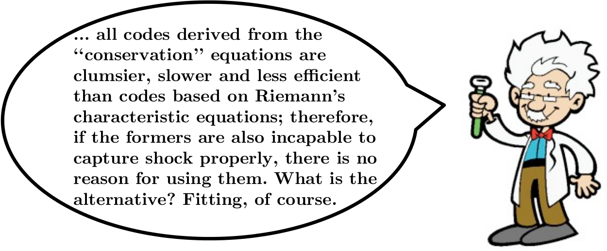
Moretti (1974) also argued that shock capturing was an attempt to differentiate the nondifferentiable.
Issues with shock capturing
Early attempts to capture shocks led to shocks that were badly smeared or oscillatory.Since then, there are many anomalies that have been identified, such as
Oscillations behind slowly-moving shocks
Start-up errors
Wall heating
Unstable equilibria
Slow convergence to steady state
First-order errors in ``high-order'' schemes
Carbuncles

Idea: Can we relate these problems to a root cause?
Intermediate Shock States
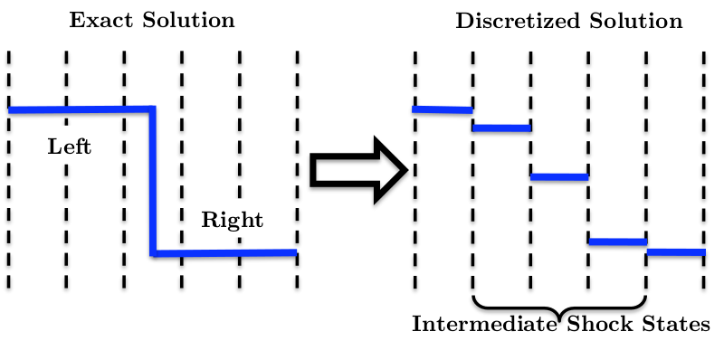For a single captured shock to be located anywhere on a 1D grid, at least one intermediate state is needed.
Shock-capturing methods treat these intermediate states with value that they should not have, immediately treating them as if they satisfies the governing equations.
However, inside a shock, local thermodynamic equilibrium is not satisfied.
Stationary Shockwaves
The intermediate state lies on the nonphysical branch of the Hugoniot.
This is an exact result for the Godunov, Roe, and CUSP Riemann solvers, and approximately true for many others.
Stationary shocks with more than one intermediate state still have intermediate states clustered around the nonphysical Hugoniot.
$$\mathbf{f}_{L} = \mathbf{f}_{R} \neq \mathbf{f}_M$$

Stationary Shockwaves
So what's anomalous about the stationary shock? Lets compute shock position.

Because the Hugoniot is non-linear, the shock positions calculated from the conserved variables do not agree.
Wall Heating
To show how shock position plays a role in wall heating, consider two control volumes:
- Local contains only the region immediately around the shock.
- Global contains the whole domain.

Wall Heating
Mach 1.1 shock (Top) and Mach 10$^6$ shock (Bottom).
Shock positions for local (middle) and global (right) control volumes shown.
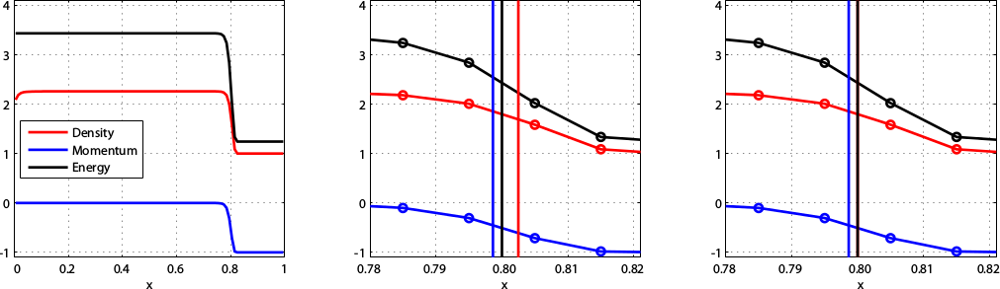
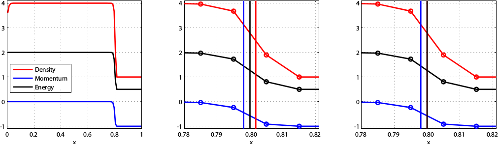
Slowly Moving Shocks
Slowly moving shocks generate spurious waves.
The intermediate states of a slowly moving shock remain close to the equilibrium states of a stationary shock.
The 1D Carbuncle
In one dimension, the carbuncle manifests itself as an initially stationary shock that does not remain stationary.
This problem can be set up exactly as a stationary shock problem, with the intermediate state varied as $$\rho_M = x_S\rho_L + (1-x_S)\rho_R$$
and the remaining variables computed to lie on the nonphysical branch of the Hugoniot curve.
To prevent waves from leaving the domain, a fixed mass outflow boundary condition is used.
The 1D Carbuncle

Here, a stationary shock is initialized, and left alone.
The 1D Carbuncle
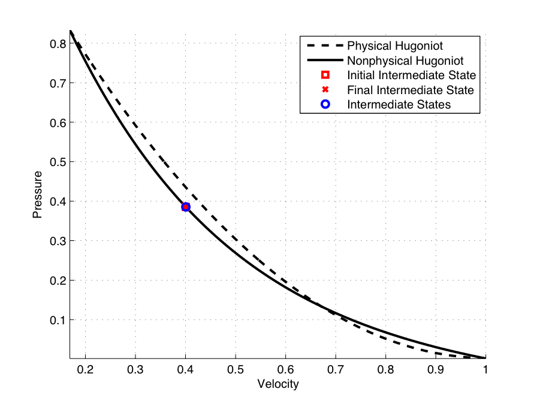

Further analysis shows the unstable states touch the stationary states along the non-physical Hugoniot curve.
New Flux Functions
Ideas:
- Inside the shock, the assumption of local thermodynamic equilibrium is invalid - why should we use the equation of state inside for these intermediate states?
- Straight-line systems do not suffer from these anomalies. Define a modified flux that allows for intermediate shock states to be only on a straight line in state space.
- Most shockwave anomalies occur around slowly moving shocks - focus on getting the stationary case exactly.
Interpolated Fluxes
Intermediate states have no physical meaning but are book-keeping devices to ensure conservation, thus the values of the conserved quantities must be accepted.
In this artificial situation, any interpretation of them is legitimate. Why should $\mathbf{f}(\mathbf{u}_M) = \mathbf{f}_M$?
Instead of using the equilibrium equation of state to compute the flux, use neighboring information to interpolate its value.
No pseudo-physical arguments will be invoked to evaluate $\mathbf{f}_M$. It is motivated solely by the desired numerical behavior.
Interpolated Fluxes
To begin, suppose the flux is extrapolated from one side as $$\mathbf{f}_i^* =\mathbf{f}_{i-1}+\tilde{\mathbf{A}}_i(\mathbf{u}_i-\mathbf{u}_{i-1}) $$ and extrapolated from the other side as $$ \mathbf{f}_i^* =\mathbf{f}_{i+1}-\tilde{\mathbf{A}}_i(\mathbf{u}_{i+1}-\mathbf{u}_{i}). $$ where $\mathbf{A} = \frac{\partial \mathbf{f}}{\partial \mathbf{u}}$. These two equations are consistent if $$ \mathbf{f}_{i+1}-\mathbf{f}_{i-1} =\tilde{\mathbf{A}}_i(\mathbf{u}_{i+1}-\mathbf{u}_{i-1}). $$e simplest flux Jacobian having this property is the cell-centered Roe matrix $\tilde{\mathbf{A}}(\mathbf{u}_{i-1},\mathbf{u}_{i+1})$. The flux can be interpolated from both sides as $$\mathbf{f}^*_i = \frac{1}{2}(\mathbf{f}_{i-1}+\mathbf{f}_{i+1})-\frac{1}{2}\tilde{\mathbf{A}}_{i-1,i+1}(\mathbf{u}_{i+1}-2\mathbf{u}_{i}+\mathbf{u}_{i-1}). $$
Interpolated Fluxes
- If the problem is linear so that the Jacobian matrix $\mathbf{A}(\mathbf{u})$ is constant, then $\mathbf{f}^*_{i} = \mathbf{f}_{i}$.
- For nonlinear systems with smooth data, $$\mathbf{f}^*\simeq \mathbf{f} + \frac{(\Delta x)^2}{2}\mathbf{A}_x\mathbf{u}_x \simeq \mathbf{f} + \frac{1}{2} \Delta \mathbf{A} \Delta \mathbf{u} $$
- Near a discontinuity, the effect is $\mathcal{O}(1)$.
- For data corresponding to a one-point stationary shock, then $\mathbf{f}^*_i$ is constant, not only on each side of the shock, but also in the intermediate cell. $$ \mathbf{f}_L = \mathbf{f}^*_L = \mathbf{f}^*_M = \mathbf{f}^*_R = \mathbf{f}_R $$
Flux Function A
With interpolated fluxes defined, a new flux function can be described similar to the original Roe framework. A rather conventional scheme might take the form
$$
\mathbf{f}_{i+\frac{1}{2}}^A = \frac{1}{2}(\mathbf{f}^*_{i} + \mathbf{f}^*_{i+1}) - \frac{1}{2}|\tilde{\mathbf{A}}_{i+\frac{1}{2}}|(\mathbf{u}_{i+1}-\mathbf{u}_i)$$
but this does not preserve the desired shock structure. A scheme that does is
$$
\mathbf{f}_{i+\frac{1}{2}}^A = \frac{1}{2}(\mathbf{f}^*_{i} + \mathbf{f}^*_{i+1}) - \frac{1}{2}\text{sign}(\tilde{\mathbf{A}}_{i+\frac{1}{2}})(\mathbf{f}^*_{i+1} - \mathbf{f}^*_{i})
$$
where $\text{sign}(\mathbf{A}) = \mathbf{R}\text{sign}(\Lambda)\mathbf{L}$.
However this flux is not $C^0$ continuous.
Flux Function B
To overcome the difficulties of new flux function A, another flux function, B, is developed.
Inspired by Roe's Riemann solver, it can be written as $$ \mathbf{f}^B_{i+\frac{1}{2}} = \frac{1}{2}(\mathbf{f}^*_{i} + \mathbf{f}^*_{i+1}) - \frac{1}{2}|\overline{\mathbf{A}}_{i+\frac{1}{2}}|(\mathbf{u}_{i+1} - \mathbf{u}_{i}) $$ where $\overline{\mathbf{A}}_{i+\frac{1}{2}}$ is the Roe matrix across cells $i-1$ and $i+2$, $$ \overline{\mathbf{A}}_{i+\frac{1}{2}}(\mathbf{u}_{i+2}-\mathbf{u}_{i-1}) = \mathbf{f}_{i+2}-\mathbf{f}_{i-1} $$ The matrix $\overline{\mathbf{A}}_{i+\frac{1}{2}}$ looks at the big picture, around the shock.
Slowly Moving Shocks


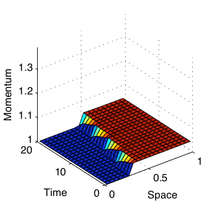
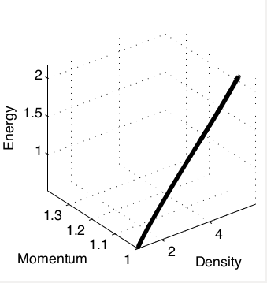


Slowly Moving Shocks


Wall Heating


The 1D Carbuncle
A
B
 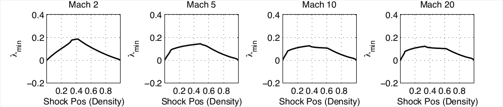
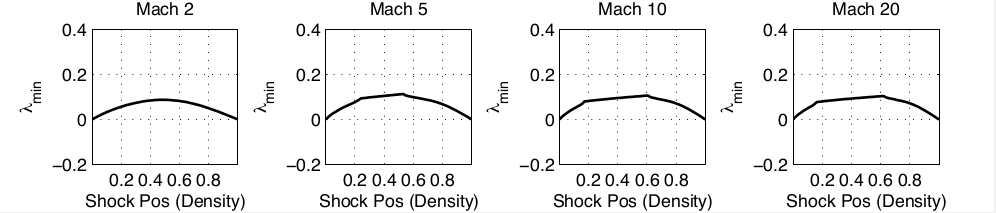
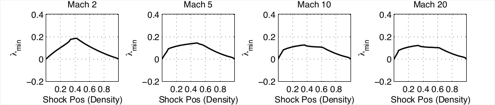
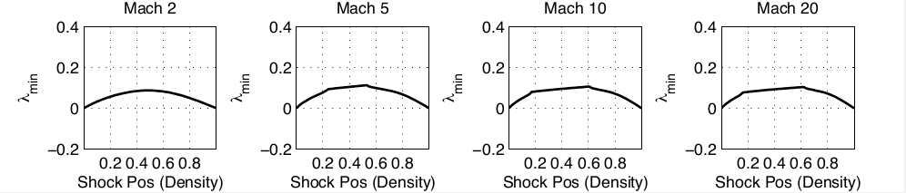
Further Observations
By construction, both new flux functions show no ambiguity in shock position for the stationary shock.
Both new flux functions perform comparably to Roe's Riemann solver on standard test problems (Shu-Osher, Sod, Woodward-Colella double blast wave).
Fairly standard MUSCL-type reconstruction can be used to obtain
second-order accuracy without compromising any properties of the
first-order scheme.
Examining Burgers' equation, flux function A is not TVD while flux function B is TVD.
Conclusions
The internal states of a captured shock should not be taken literally; in particular it should not be assumed that they are in thermodynamic equilibrium.
Using the equilibrium equation of state for these internal cells gives rise to ambiguity in the shock location.\\[0.25cm]
This ambiguity can be linked to many of the anomalies that affect shock-capturing schemes.
It is possible to smooth the fluxes in a way that has no effect on linear systems but which sets the internal fluxes of a stationary shock equal to the external fluxes.\\[0.25cm]
This can be made the basis of schemes that eliminate or greatly reduce anomalous behavior.
A few common questions:
\begin{itemize} \item Aren't you just avoiding the problem, ignoring the small scales inside the shockwave?Yes, Exactly.
\item Isn't this just a form of artificial viscosity?
Mathematically, yes, although it is proportional to $\mathbf{A}_x|\mathbf{u}_x|$ rather than $\mathbf{u}_x|\mathbf{u}_x|$, such as that of Von Neumann - Richtmyer.